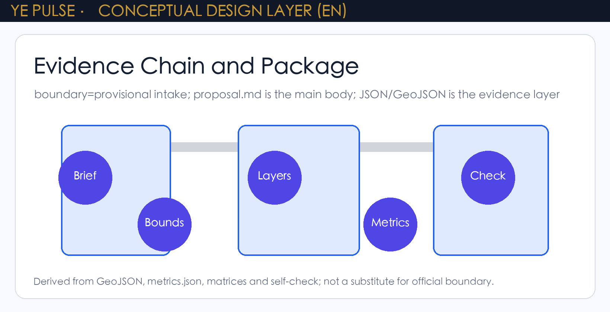
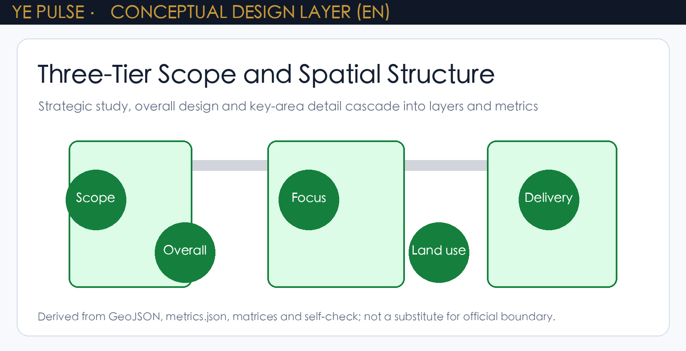
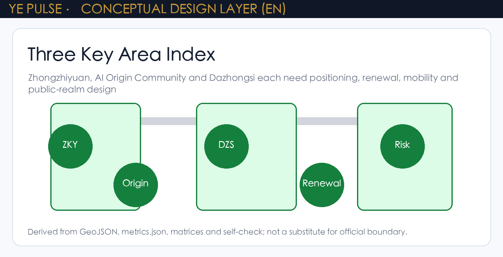
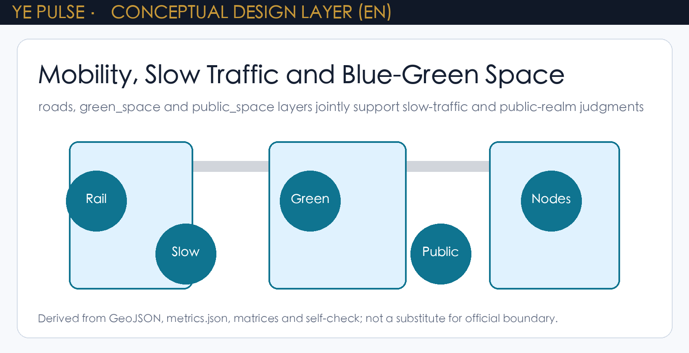
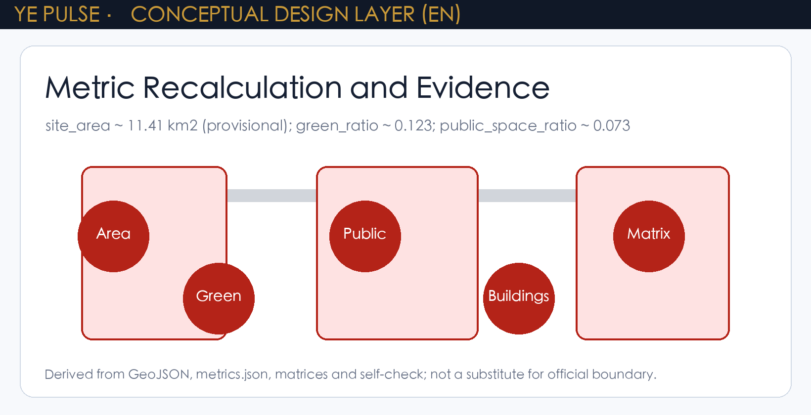

Ye Pulse: Human-Centered AI Belt
A formal, review-ready AI urban design package that links the Jing-Zhang heritage corridor, three innovation anchors and auditable public services. The Ye Pulse identity is a conceptual, non-official design layer.
Ye Pulse: Human-Centered AI Belt
Identity concept: Ye Pulse
“Ye” is translated here into visible light and a continuous pulse. Ye Pulse is a conceptual identity that connects the Jing-Zhang railway memory, AI innovation nodes and everyday public services with warm amber signals over a blue-green walking network. A forked light mark, abstracted from the Chinese character “烨”, is proposed as a map legend and wayfinding accent. It is not an approved government brand, statutory planning name or implementation commitment; the organizers and rights holders must review it before use Source [assumption:YE-PULSE-CONCEPT-ONLY].
The concept has three auditable actions: Ye Light Nodes for reservable public demonstrations and enterprise services; a Ye Walking Line for continuous wayfinding, access and night safety; and a Ye Review Loop using public, aggregated and revocable service data. No personal trajectories are collected and an agent never replaces planning approval.
Evidence, scope and assumptions
This proposal follows the official international design prequalification notice and the repository taskbook. The study area is approximately 43.6 km², the overall design area approximately 11.4 km², and the three key areas together approximately 368.4 ha. The checked GeoJSON layers and metrics are the machine-readable evidence; the current boundary and key-area polygons remain provisional until official geometry is published. Every area, ratio and capacity claim must be recomputed after that replacement Source Source.

Three-level spatial framework
At the research scale, Ye Pulse builds a chain from universities and open-source communities to enterprise conversion, public experience and international communication. At the overall-design scale, it translates that chain into land use, renewal projects, mobility, municipal support and a coherent cityscape. At the key-area scale, it tests detailed programs, building interfaces, public-space continuity, transport and implementation dependencies.

The spatial concept is one heritage-and-innovation belt, three anchors, distributed scenarios and a blue-green mobility loop. The three anchors are Zhongzhi Park, Beijing AI Origin Community and Dazhongsi AI Cluster. They are design interpretations of the brief, not new red lines.
Overall design and future-city strategy
The belt combines AI research, open collaboration, enterprise services, talent life and public-facing culture. Low-efficiency spaces are catalogued as renewal opportunities; the land-use, building, road, green-space, public-space and phasing layers express the proposal as a reviewable set of objects rather than a slogan. Height, intensity, setbacks and statutory road lines remain “to be confirmed by the formal plan” wherever authoritative controls are unavailable.
The urban AI layer is deliberately modest: it may help find walking gaps, summarize aggregated facility demand, support maintenance and review event-safety risks. It must be explainable, privacy-minimizing, human-reviewed and reversible.
Three key areas
Zhongzhi Park AI Autonomous Innovation Accelerator: a garden-like full-stack innovation district with low-carbon testing, standards workshops, safety-governance displays and a stronger Qinghe interface.
Beijing AI Origin Community: a near-campus conversion and talent neighborhood linking campus, park and street through walking and cycling; it provides open-source release, results publishing, legal/IP and daily-life services.
Dazhongsi AI Industry Cluster: an urban intelligent-economy and international-contact district around the station, with four-quadrant pedestrian continuity, intelligent-agent and terminal demonstrations, data-element services and public-facing enterprise frontage.

AI ecosystem, users and scenario cards
The user set includes open-source developers, start-ups, enterprise visitors, residents and university communities. Their needs—release, co-working, compute access, talent housing, daily services, learning and international contact—are mapped to public rooms, service nodes and the mobility loop. Ten scenario cards are included: open-source release hall; safety-governance sandbox; edge-compute station; explainable AI walking guide; Dazhongsi international roadshow room; Qinghe low-carbon innovation corridor; near-campus conversion street; data-element salon; AI daily-service street; and a global AI activity route.
Each card must state its user, spatial carrier, data boundary, human-review rule and operating responsibility. Public-space, green-space and road layers provide the spatial evidence; no scenario is a claim that a government program already exists.
Land use, buildings and renewal
The proposal keeps a legible mixed-use structure: innovation and enterprise services near the anchors, civic and cultural interfaces along the heritage belt, residential and daily-life support near transit, and a connected green-public-space system. Buildings are represented as design footprints and renewal categories, not as approved development rights. Retain, adapt and replace decisions are reversible until surveys, ownership and statutory conditions are confirmed.
Mobility, municipal systems and blue-green public space
The mobility framework prioritizes transit-to-walk connections, a fine-grained street loop, accessible crossings, bicycle parking and low-speed public-space edges. The blue-green system links the Jing-Zhang heritage park, Qinghe-facing open space and neighborhood courtyards. Ye Light Nodes use low-glare, energy-aware lighting and clear multilingual wayfinding. Stormwater, distributed energy and edge-compute prototypes are presented as testable options with maintenance owners, not as installed assets.

Phasing and implementation
Phase 0 (0–12 months) confirms official boundaries, audits ownership and accessibility, and pilots one Ye Light Node and one open-source release room. Phase 1 (1–3 years) connects the three anchors, delivers walking gaps and public-service prototypes, and publishes aggregated evaluation data. Phase 2 (3–8 years) scales enterprise services and the international route only after independent review. Each phase has a responsible actor, dependency, reversible trial and stop condition.
Metrics and validation
The package records site and key-area geometry, land-use coverage, building footprints, road and green/public-space layers, scenario counts and phasing objects. Metrics distinguish official facts, design recommendations and provisional values. Core checks include geometry coverage/no overlap, key-area count, public-space and green ratios, building footprint area, scenario completeness and evidence links. Replace the provisional polygons and rerun all checks before any statutory or investment decision.

Risk, rights and review statement
The package is released under COMMUNITY-DISPLAY-ONLY. It does not grant planning, procurement or construction rights. Personal data, campus data, enterprise marks, imagery and third-party content require permission. The GitHub contributor is responsible for this package; the repository maintainers and public authorities retain review and acceptance decisions. “Ye Pulse” is a personal design signature made public as a conceptual layer, not a claim of endorsement.